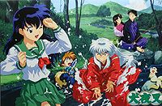
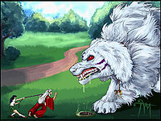
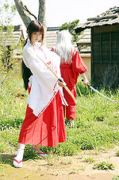
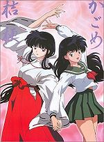
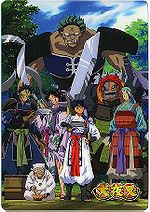
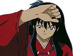

Inuyasha (anime)
 De: La Frikipedia, la enciclopedia extremadamente seria.
De: La Frikipedia, la enciclopedia extremadamente seria.
| De la serie anime para todos:
|
| Inuyasha
|
| 
|
| Los personajes buscando la perla de Shikon con entusiasmo
|
|
| Género:
|
Shonen feudal
|
| Episodios:
|
160 y algunos mas
|
| Autor del manga:
|
Rumiko Takahashi
|
| Publicación:
|
Una revista
|
| Publicado en:
|
Japón
|
| Director del anime:
|
Aome Higurashi
|
| Transmitido en:
|
Cine
|
| Ovas:
|
4
|
| Películas:
|
2
|
| Notas
|
¡ABAJO!
|
«¡¡¡¡¡ABAJO!!!!!»
~ Kagome enseñando obediencia a Inuyasha
«¿Desea tener un hijo conmigo?»
~ Miroku a cualquier chica que se le atraviese
Inuyasha es un anime japonés (¿alguna vez oíste hablar de anime ruso o italiano?) zoofílico y necrófilo. Se sitúa en la era antigua, a la que supuestamente llegan viajando por un túnel (en realidad se fuman unas hierbas) donde, como es bien sabido, existían toda clase de monstruos. Si creyeron que Pokémon era extremadamente largo y repetitivo, no han visto esta serie.
Trama
Trata sobre un chico de 67 años, de los cualos duró 50 años "clavado" a un árbol, y que es mitad perro, demonio y hombre, que tiene un hermano supuestamente mas fuerte que el, que sin embargo, siempre pierden las peleas callejeras que constantemente tienen. Una zoofílica que quiere con el chico perro y que es la reencarnacion de una sacerdotisa que tenia permiso para tener sexo hasta con un caballo. Un zorro-niño-feo que se convierte en globo de goma rosa. Un monje muy pervertido que va por la vida proponiendole a toda chica que se le cruce en el camino tener un hijo con él, y es tan sinvergüenza, siendo un monje y aún asi no tiene principios morales. Una chica con un traje muy apretado que tiene un boomerang mas grande que ella, que tenia un hermano que lo secuestraron y se lo llevaron a lo oscuro (sé que estais pensando, mal pensados) y es la única que aceptó al monje ese.
Total que estos tíos sin sobrinos van persiguiendo a un sujeto raro con pinta de travesti, vestido con una toalla de mono y de nombre Naraku, para quitarle una cosa fea llamada la Perla de Sudoku (Shikon), que se supone le da poderes mágicos a quien la posee (si, le concede cualquier deseo, muy original cofcofdragonballcofcof), el tipo la quiere para volverse totalmente necrofílico, ya que solo una de sus mitades es asi, pero este wey se pasa y viola a todos los que se le interpongan en su camino, por lo tanto, tiene mas enemigos que 4kids.
La cosa curiosa es que son cuatro jovenes, 2 hombres (uno activamente sexual y el otro medio raro) y dos mujeres semidesnudas o con la ropa apretada que hacen un viaje solos. Ustedes deduzcan el resto XD
Argumento
 Aquí se demuestra que justas son las peleas en esta serie
Lo de siempre, vamos, que una putilla se cae de un pozo y se encuentra a un perro-humano mutilado en un árbol.
- Temporada 1: Kagome viaja en el tiempo y conoce a Inuyasha, Kaede, Miroku, Shippo y Sesshomaru. Se enfrentan a Naraku y a Sesshomaru.La perla de Shikon se rompe por culpa de Kagome. Kikyo resucita y ataca a Inuyasha. Se revelan los secretos de Naraku (porqué es como es, y esa clase de pavadas). Inuyasha y los otros conocen a Sango, quien busca venganza.
- Temporada 2: La espada de Inuyasha (Tessaiga/Colmillo de Acero) reacciona ante su amo, para mal de Sesshomaru, quien no oculta su interés por una espada vieja con pelos en el mango y que crece según el nivel de ataque. Inuyasha y los otros conocen a Koga, un hombre lobo. Kagome vuelve a su época e Inuyasha la persigue. Kagura y Kanna hacen su aparición. Tessaiga se rompe y la tienen que mandar a reparar, mientras tanto Inuyasha se vuelve loco. La sacedotisa Tsubaki quiere vengarse de Kikyo, pero Kagome la vence.
- Temporada 3: Naraku se esconde en un lugar secreto al que todo el mundo acude. Inuyasha decide fortalecer su espada para segar los campos. Lin es secuestrada y Sesshomaru se vuelve loco (aunque no lo demuestre). Ayame reclama a Koga, quien huye con sus hombres para no tener que casarse. Los chicos descubren un gran negocio de tráfico de falsas perlas de Shikon en el mercadonegro.
- Temporada 4: Actuación de los Siete Guerreros. Naraku está escondido.
- Temporada 5: Aparición de Hakudoshi. Monjes y monstruos se mueren, precisamente por culpa de Hakudoshi. Los chicos consiguen el último fragmento de la dichosa perla.
- Temporada 6: Derrotan a Naraku, quien se vuelve a esconder. Kohaku intenta traicionar a Naraku, así que actúa como agente encubierto.
- Temporada 7: Continuación de la anterior.
- Última temporada: el final de todo. Naraku es derrotado y tal..
Personajes
 ¿Acaso dudabas de la historicidad de este
anime? (Foto tomada con una cámara del siglo XVII)
Principales (Humanos)
- Kagome (Aome): Es la clásica escolar japonesa que se lía con personas que no conoce y con monstruos. Su abuelo o no sé quien carajo de su familia se lió a su vez con Kikyo cuando Inuyasha no estaba, y eso dio origen a Kagome (O sea que aparte zoofílica y necrofílica la serie también es incestuosa). Mas tarde descubrieron que Kagome se había metido en su cuerpo la perla de shikon (No seas malpensado, no se la metió así) y a pesar de que dice querer a Inuyasha no le quita el puto collar que le pusieron al comienzo de la serie lo que hace pensar que ademas posiblemente lleva una relación tipo sado-maso con el protagonista.... ¡Joder con estos japoneses!
Es una niña boba e inútil, que misteriosamente adquirió una puntería perfecta, puntería que no aprovecha ni una mierda para echarles la mano a los de su grupo. Se las hace de damisela en peligro, esperando que InuYasha vaya en su rescate, vaya protagonista más cojonuda.
- Miro
nku: El personaje calenturiento de este Anime. Lo que pocos saben es que es devoto de la virgen del calvario y siempre trae su rosario para encomendarle el novenario. Su arma más poderosa es una agujero negro que le hizo Naraku (en la mano) en el cual es capaz de introducirse todo (¿Y luego preguntan por que los padres quieren censurar cosas como estas?)
- Sango: Una experta en posiciones y exterminación de monstruos. A sus 16 años, pierde a toda su familia en manos de Kohaku, su hermano (que mal rollo), y nunca se le malogra el maquillaje (ver Ley N.51 del anime).
Principales (Animal con algo)
- Inuyasha: Mitad perro, mitad demonio y mitad humano (150 %), es el personaje principal de la serie. Tiene 67 años, aunque no lo aparenta con sus magias antiguas y todo eso. Su nombre significa perro-bestia. Tiene el complejo de Naruto pues nadie lo queria por ser un monstruo, nomas su mamá zoofilica . Ahora es un necrofílico ya que quiere con una muerta y a la que esta viva ni la mira.
- Koga: Es un ser mitad lobo, mitad humano y vive rodeado de lobos machos. (en toda la serie no se ve ningún lobo hembra hasta la quinta temporada... sospechoso). Se enamoró de Kagaome, pero el muy raro, se la dejó a Inuyasha y el se fue con su manada de lobos machos (esto ya es mas claro que sospechoso). Es más: estaba comprometido con otra loba, pero se la pasa huyendo para no casarse.
- Shippo: Es un pequeño niño zorro y tiene aproximadamente 6 años. Después del asesinato de su padre por los hermanos Relámpago, no hace nada mas que llorar (¡Típico de Anime!). Kagome lo adopta, lo cuida como su hijo y hasta se baña con él (a Inuyasha le gustaría estar en su lugar). Despues Shippo creció y se convirtio en el zorro de nueve pollas que fue sellada en el cuerpo de un niño rubio pero esa es otra historia....
- Kirara: Es la gata de Sango, tiene el tamaño de un chihuahua pero puede envolverse en una bola de fuego y cuando sale quemada se ha convertido en un gato volador (OTRO gato volador) gigante de 3 metros con complejo de Cuauthemoc (no blanco) porque siempre se le estan quemando las patas, siempre es usada por Chango y cuando digo "usada", sí, si pueden pensar mal.
- Myoga Es un anciano mitad-pulga, mitad-humano. Es el lamebolas de Inuyasha, antes era el lamebolas del padre de Inuyasha (y todavía hay quien dice que la gente no progresa). Aunque muchos no lo sepan es el antepasado del maestro Happosai
- Ayame: Mujer loba de otra tribu de hombres lobo. Es la unica que quiere con Koga, pero como ya lo dijimos, el prefirió estar con su manada de lobos machos (lo repito: esto se ve sospechoso)
Los Necrófagos
 Kagome y Kikyo, presionando a Inuyasha para que se decida de una vez
- Kikyo: La tercera en discordia (¿O esa era Kagome?). Fue la pareja de Inuyasha hace 50 años, pero rompieron por una pequeñez tan simple como intentar matarse mutuamente (Ni aguantan nada). Antes de morir selló a Inuyasha clavándolo con una de sus flechas en un árbol (Inuyasha quería clavársela a ella primero pero Kikyo no lo dejó). 50 años después, en el tiempo en que se desarrolla la serie, es resucitada convenientemente (¬¬) para cagarla entre Inuyasha y Kagome. Le da el sabor de telenovela necrófila al Anime. No sé cómo el
pendejo intelectual InuYasha pudo confundir a Kagome con Kikyo cuando claramente la zombie de barro está más buena, además de ser la más útil de toda la serie. Si Kagtards, les guste o no, la mujer más chigona poderosa de la serie es la hija de perra esa. Terminó siendo más útil que InuYasha y su grupito, incluso después de morir por segunda ocasión. (?)
Tiene una relación obsesiva de amor/odio con Naraku de la cual ella no está enterada.
Al parecer su reencarnación no es únicamente Kagome, también Arashi Kishu
- Koja-ku: El hermano de Chango, quien mató a toda su familia, porque ella no le quiso ayudar con su "entrenamiento". Es otro resucitado como Kykyo pero a este lo controla Naraku, es un niñato loco que carga una especie de hoz con cadena que te puede torcer a 100 metros de distancia y que usaba originalmente como parte de su acto porque era artista de circo hasta que le salio mal el paso de la muerte y Naraku les robo el cuerpo a los paramedicos para hacerle budú a Chango pero luego decidió que era mejor revivirlo y tenerlo como esclavo
sexual personal.
- Kaede: Es la hermana menor de Kikyo, lo raro es que es mucho mas vieja que ella. No vamos a intrigarnos que es lo que hizo en su vida para terminar así de gastada, pero sabiendo que cuando Kikyo murió, hace 50 años, tenía alrededor de unos 8 años de edad, sorprende por que aparente unos 75 años en lugar de menos de 60, sabrá Dios a que se habrá dedicado.
- Shichinintai: Son siete guerreros resucitados por Naraku. En vida, fueron una pandilla de carajos que se dedicaban a hacer desastres para los señores feudales, pero los mataron porque cobraban caro. Ya resucitados, se dedican a joder al grupo de Inuyasha. Están compuestos por:
 Los Siete Guerreros, a cada cual más raro
- Bankotsu, líder del grupo, que fue el que negoció con Naraku; porta una alabarda que utilizaba para segar el trigo y no tolera la traición (entre los malos también hay códigos de honor). Muerto por Inuyasha.
- Kyokotsu, un gigante poderoso que fue derrotado miserablemente por Koga, no tenía muchas habilidades (vaya poderoso de mierda).
- Jakotsu, el maricón del grupo, que siempre andaba tras Inuyasha para mirar su colmillo de acero; tiene un látigo sado y es el más leal a Bankotsu. Herido por Inuyasha, que le perdona la vida (WTF?), pero muere por pendejo(¬¬).
- Mukotsu, fabricante de gases venenosos (gas pimienta, gas mostaza, gas mayonesa,..). Muerto por Sesshomaru, quien no soportaba su mal aliento.
- Suikotsu, guerrero esquizoide ya que tiene doble personalidad (como Saga y Kanon de Geminis). Tiene unas garras de metal, como Wolverine, pero no se salva de las flechas de Kikyo.
- Ginkotsu, androide reconstruído con carrozas de guerra. Inuyasha lo destruye pero lo vuelven a construir, al final se autodestruye por culpa de Koga.
- Renkotsu, artillero del grupo, es el único que manipula explosivos y armas de fuego. Quería ser el líder del grupo, pero le tocaba hacer el papel de segundón junto con Jakotsu, hasta que decidió quitarle el puesto a Bankotsu. Por supuesto, Bankotsu lo vence.
Los Tétricos
MNaraku: El enemigo principal y por lo tanto más raro de la serie. Primero quiere con Kikyo (en ese entonces Naraku era un pobre despojo de humano) y luego quiere matarla (en ese entonces era un demonio mitad hombre - mitad travesti), y finalmente logra matar otra vez a la zombi resucitada (en ese entonces era demonio - travesti puro). Puede hacer muchos clones suyos, aunque ninguno se parece y la mayoría son mujeres o transexuales. Y aún apesar de ser un personaje retorcido, está muy zukulemthycimo.
Presume de tener un amorío con Kikyo; amorío del cuál la susodicha no ha escuchado ni media palabra.
- Kaijimbo: Es un ser enigmático que roba cadáveres y hace armas... eso si que es estar muy enfermo. Fue alumno de Totosai, pero no quiso pagar el curso y se fue a trabajar por su cuenta.
- Hakudoshi: Es el hijo de numero tropocientos mil de Naraku. Primero era un bebe, pero se parte en 2, y una de estas partes crece de la nada y no tiene corazón ya que este órgano está en la otra parte (que sigue siendo un bebe), es por eso que la parte sin corazón no puede morir... ¿lógico verdad?.
- Kageromaru y Juromaru: Juromaru es un afeminado de pelo rosa que requiere bozal o se suelta mordiendo al que se le pone enfrente. Dentro de Juromaru esta Kageromaru (específicamente en sus entrañas). Ambos se mueren de sífilis contagiado indirectamente por Sango.
Los Inexpresivos
- Kanna: El personaje más plano que jamás ha existido en anime alguno. El escritor probablemente la hizo así para ahorrarse diálogos y reacciones. Es una de las extensiones de Naraku que carga un espejo que no utiliza para nada, sólo para chupar almas.
- Seshomaru: medio hermano de Inuyasha, es considerado el mejor demonio, claro está, pues tiene más fuerza que
la bola de pendejos buenos para nada los dignos acompañantes de InuYasha. Siempre lleva a una niñita que va como esclava sexual acompañante (O sea que aparte de Zoofilico, Necrofilico e Incestuoso el Anime también nos salio Pederasta, sólo hace falta verle el nombre...). Este es el tipo clasico, que aparenta una cosa pero es otra, dice odiar a los humanos y sin embargo lleva a una niña pequeña, dice que odia a su hermano y lo trata como mierda, pero cuando van a herir de muerte a el pequeño mestizo, Sepsomaru no duda en ser el escudo vivo para salvarlo, y lo peor, dice que su hermano es una mezcla, que pelea mas un culo que el, mas sin embargo, sepsomaru siempre pierde las peleitas que tienen cualquier par de hermanos, aunque estas no son tan graves, son solo peleas bobas entre familia, solo se cortan los brazos y se dejan paraliticos el uno al otro, es que de verdad, es una pareja de hermanos que se quiere mucho.
- Totosai: herrero que construyó el colmillo de acero. No hace mucho, sólo mirar a la gente fijamente. Va montado en una vaca ya que se agotaron las kiraras.
Los que me sobraron
- Kagura: Una de las extensiones de Naraku, tiene 1 año pero dicen que tiene 6 por que esta muy demacrada. Traiciona a Naraku, y casi lo mata, pero fallo y Naraku la utiliza en todo aspecto que se imaginen.
- Jaken: Es la gilipollez encarnada en un anime. Reptiliano hombrecito verde cuya raza aparentemente abundaba en Japón antes de la llegada de las armas de fuego. Tiene unos sentimientos sospechosos hacia Seshumaru (Si Mioga es el Lamebolas de Inuyasha es que no han visto lo que Jaken esta dispusto a hacer por Seshumaru). Tiene un bastón laza-llamas capaz de acabar con un grupo de soldados pero no con Miroku (¡Hasta eficiente salió el monje!)
- Lin (o Rin): Es una niña que Sesshomaru se consigue tirada por ahí, y quien decide seguirlo. Es el elemento lolicon de la serie, de hecho hay fanfics que intentan desentrañar la relación Lin-Sesshomaru.
- La familia de Kagome: son tres, cada uno más inutil que el otro: la madre que se limita a cocinarle a su hija mientras ella se iba de farra con la pandilla de antisociales en el Japón del siglo 15. El abuelo que es dueño de un templo aunque sus hechizos son inútiles. Y Sota, el hermano menor de Kagome, inutil, llorón y cobarde, aún así se las arregló para tener novia. Ah, también tienen un gato que se la pasa jugando con Inuyasha (o más bien Inuyasha se la pasa jugando con el gato).
- Las amigas de Kagome: también son tres, que sólo están allá para entrometerse en la vida sentimental de Kagome. Una de ellas tiene el cabello rizado y es friki, las otras lo tienen liso y son pijas.
- Hojo (Joyo): el médico personal de Kagome, quien siempre le da remedios y medicinas raras para "curarla" de sus "enfermedades". En realidad es un aspirante a idiota.
Temas principales
 Inuyasha en su etapa metrosexual, luego de someterse a una sesión de lavado de cabello
- La Muerte
- Necrofilia
- El drama de discriminación de los híbridos humano / animal
- Zoofilia
- La reencarnación y descendencia
- Incesto
- La relación entre Seshumaru y Rin
- Pedofilia
- y otras parafilias por conocer
- Además de joyería
¿Por qué...
- ...Inuyasha dice que su chaqueta es indestructible y después le atraviesan el cuerpo un montón de veces? ¿es que es indestructible solo con kagome?
- ...Se llevan toda una vida buscando la esfera y va, y desaparece al final de la serie?
- ...La puñetera espada de Inuyasha es mas grande que él?
- ...A meKago nunca se le ven sus bragas con esa faldita?
- ...la serie nunca se acaba y la repiten hasta que te la sabes de memoria?
- ...los latinoamericanos llamaron a Kagome como Aome? ¿les daba deseos de ir al baño?
- ...simplemente no pudieron haber reunido las esferas del dragón y pedir el deseo de recuperar los fragmentos de la perla.
Autor(es):
- Fordus
- Frikiman
- Aque
- Roms
- Khazike Khashondo
- Azulejos
- Dalbo
- Superguapo 69
- Sharin
- SriTaHosTiL
Frikipedia 2005-2016, Licencia
GFDL 1.2 - Extraído por FrikiLeaks